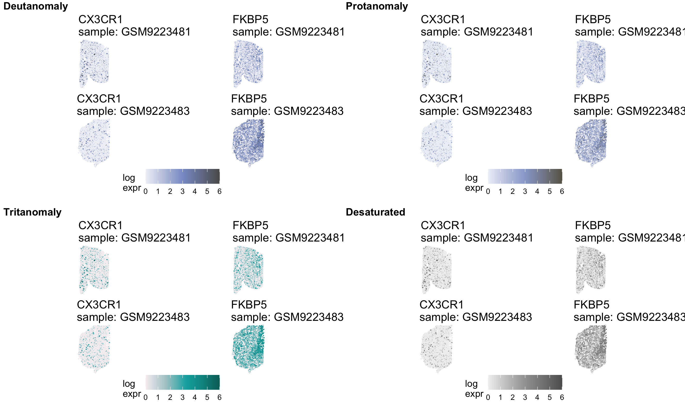
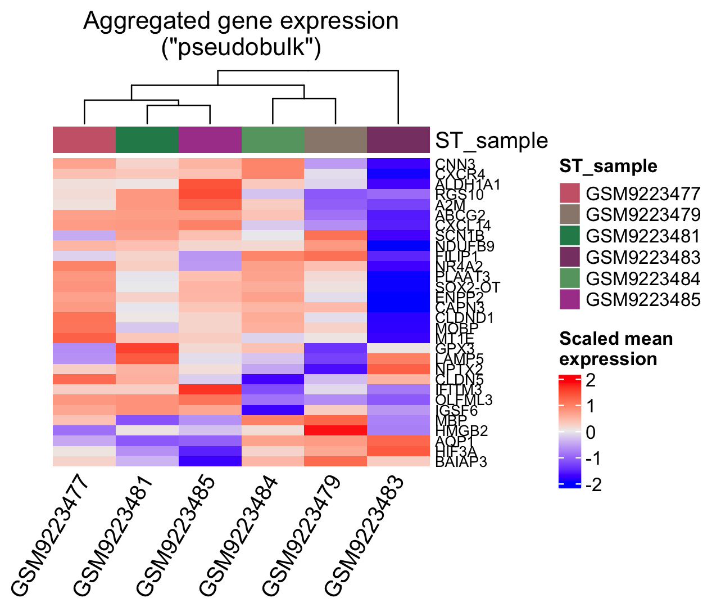
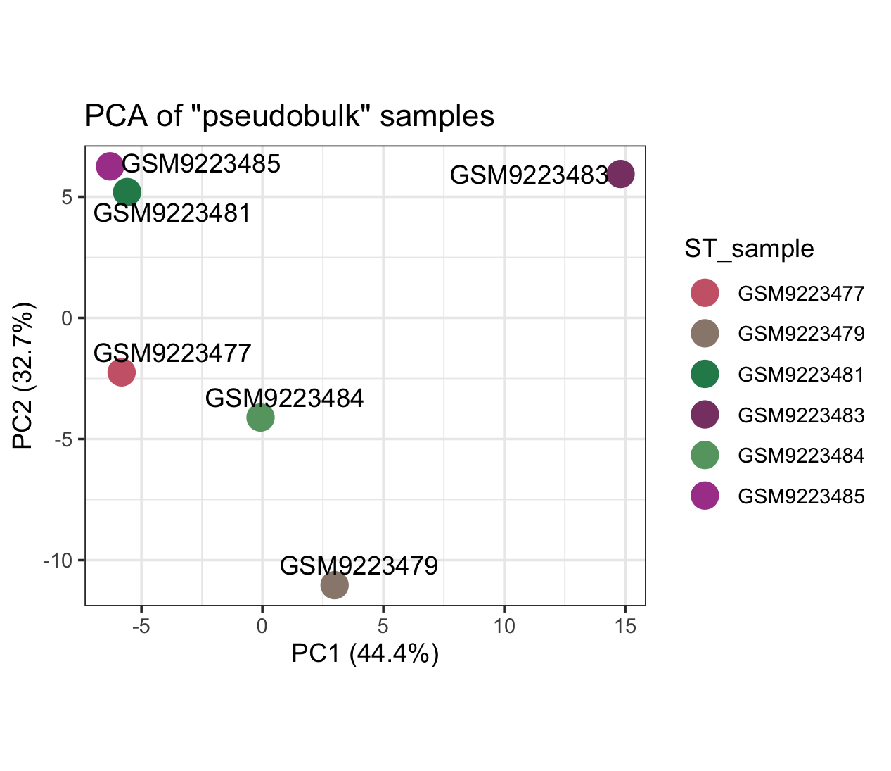

library(here)
library(tidyverse)
library(readr)
library(dplyr)
library(sf)
library(spatialGE)
library(ggpubr)Biomedical Open Case Studies: Exploring quality, normalization, and patterns in spatially-informed gene expression data
![Quilt plot showing the expression of two genes for a control neurotypical sample on the top and a Schizophrenia diagnosis sample on the bottom. Points in each quilt plot represent a single cell or spot within its spatial context. Expression levels are displayed with a color gradient where light purple corresponds to low expression, blue corresponds to medium expression, and green corresponds to high expression. The first gene on the left is CX3CR1 a downregulated gene and we see lower expression levels on the bottom quilt plot because it is paler overall. The gene on the right is FKBP5 an upregulated gene and we see higher levels of expression on the bottom quilt plot because it has more blues and greens.](img/quilt_plots_ntc81_scz83_cx3cr1.png)
Disclaimer
The purpose of the Open Case Studies project is to demonstrate the use of various data science methods, tools, and software in the context of messy, real-world data. A given case study does not cover all aspects of the research process, is not claiming to be the most appropriate way to analyze a given data set, and should not be used in the context of making policy decisions without external consultation from scientific experts. In addition, due to size constraints, datasets used within a case study may be subset of the original/full dataset.
License information
This work is licensed under the Creative Commons Attribution-NonCommercial 4.0 (CC BY-NC 4.0) United States License.
This work is funded through the National Institutes of Health, specifically the National Institute of General Medical Sciences: Grant Number 1R25GM160622.
To access the GitHub repository for this case study see here: https://github.com/opencasestudies/ocs-bio-spatial-transcriptomics/
To cite this case study, please use:
Isaac, Kathryn J and Wright, Carrie. (2026). https://github.com/opencasestudies/ocs-bio-spatial-transcriptomics/. Exploring quality, normalization, and patterns in spatially-informed gene expression data (Version v1.0.0).
Motivation
This case study explores {}…
Definition
Provide the definition here
Images are very helpful within this section….

Main Question
Our main question(s)
- Question 1
- Question 2
Learning Objectives
In this case study, we will explore {}.
This case study will particularly focus on {}.
The skills, methods, and concepts that students will be familiar with by the end of this case study are:
Data Science/Bioinformatics Learning Objectives:
- {FILL IN}
- {FILL IN}
- {FILL IN}
Biological/Topical Learning Objectives:
- {FILL IN}
- {FILL IN}
- {FILL IN}
We will begin by loading the packages that we will need:
| Package | Use |
|---|---|
| here | Constructs paths within project |
| tidyverse | Data wrangling |
| readr | Reading in data |
| dplyr | Data wrangling |
| sf | Enables storing and working with spatial data |
| rhdf5 | Reading and working with H5 files |
| Matrix | Working with sparse and dense matrices |
| spatialGE | Package for QC, normalization, filtering, visualization, and analysis of spatially-resolved gene expression data |
| ggpubr | Further functions to customize and prepare ggplot2 plots for publication |
The first time we use a function, we will use the :: to indicate which package we are using. Unless we have overlapping function names, this is not necessary, but we will include it here to be informative about where the functions we will use come from.
Context
{FILL IN}
What are the data?
Metadata
For the Xenium experiments, there were 24 donors:
- 12 Neurotypical controls [NTC]
- 5 males
- 7 females
- 12 Schizophrenia [SCZ]
- 6 males
- 6 females
There are two metadata files (that we’ll need to combine to relate GEO IDs to sample IDs)
spatial_samples.csv– this file is from the supplementary information and provides metadata such as Sex, Diagnosis, age, and if the sample has corresponding Visium or Xenium data.- Comma separated values with a header
- first column is
Brain Number (ID)(e.g., BR####) - second column is
Race - third column is
Sex - fourth is
Age - fifth is
RIN- RNA Integrity Number (add info in context section about this) - sixth is
PMI- Postmortem Interval (add info in context section about this) - seventh is
PrimaryDx(e.g., Control or Schizophrenia) - eighth is
Visium-SPG(does this sample have corresponding Visium data YES/NO) - ninth is
Xenium(does this sample have corresponding Xenium data YES/NO)
geo_to_spatial_samples.csv– this file I made by wrangling the file names to create a dataframe (and saved that to a.csv)- Comma separates values, no header
- first column is the GEO number for each sample
- second column is the Brain Number (ID) (e.g., BR####) matching those in the
spatial_samples.csvfile
Code for creating geo_to_spatial_samples.csv:
list.files(path="/fh/fast/leek_j/user/kisaac/ocs_spatial/GSE307404/", pattern = "cell_boundaries.csv.gz$") %>% stringr::str_replace("-cell_boundaries.csv.gz", "") %>% strsplit("_") %>% do.call(rbind.data.frame, .) %>% `colnames<-`(c("X1", "X2"))Spatial Coordinates
We have {Sample}-cell_boundaries.csv.gz files for the spatial coordinates rather than classical files with spatial coordinates (….add explanation of what these classical files/other options are). Specifically these files have many rows per cell describing each vertex that is part of a cell polygon. We can find the centroid of each cell by considering all of these polygon coordinates together.
For each row:
- cell_id
- vertex_x
- vertex_y
Note that the Cell IDs in these files correspond to the $barcodes discussed in the RNA counts data
RNA counts
The data for the RNA counts is stored in .h5 files. Rather than storing large matrices, the data is more efficiently stored in named/nested lists that can be used to reconstruct the matrix. Of important note, only non-zero counts are stored as well as the indices where those counts are in the matrix (e.g., for which genes and spot IDs they correspond with). Information here: https://www.10xgenomics.com/support/software/space-ranger/latest/advanced/hdf5-feature-barcode-matrix-format
Can use rhdf5::h5dump(file_name, load = FALSE) to get a look at the names or headers of the data.
$matrixis the top name$barcodes– cell IDs$data– the non-zero counts$features– has subparts relating to the rows/genes$_all_tag_keys– “genome” for our data$feature_type– specifies Gene Expression vs negative control probe, negative control codeword, unassigned codeword$genome– unknown for our data$id– gene ID or control/probe ID for elements of$data$name– gene name or control/probe name for elements of$data
$indices– zero based row index for non-zero values found in$data(iequivalent forMatrix::sparseMatrix)$indptr– zero based index for$dataand$indiceswhere columns start (pequivalent ofMatrix::sparseMatrix)$shape– dimensions of the data (number of genes or features X number of cells).- Note that the number of cells >>>>> number of genes (Xenium panel with limited number of genes)
- Note that the product of the dimensions will be greater than the length of
$datasince this is representing non-zero counts only and therefore is a sparse representation
What spatialGE is looking for
spatialGE will accept file directories, but it will also accept lists of dataframes for each sample. Because we have to wrangle our generic format input data, we’ll be providing named lists of dataframes for both the spatial coordinates (spotcoords) and the feature counts (rnacounts).
For spatial coordinates, the dataframes should have
- 3 columns
- Spot or Cell IDs
- X value (center)
- Y value (center)
- One row per each unique spot or cell ID
For the feature counts, the dataframes should have
- n features/rows
- (m+1) spots or cells/columns
- The plus 1 is because the first column will list the feature/gene names
For samples metadata (if passing a dataframe with additional metadata beyond sample names), the sample names used in the named lists for spotcoords and rnacounts should be the first column of the samples dataframe.
Limitations
There are some important considerations regarding this data analysis to keep in mind:
- {FILL IN}
- {FILL IN}
Ethical Considerations
There are some important ethical considerations when working with data relating to this case study’s main questions.
- {FILL IN}
- {FILL IN}
Data Import
Note that the sample files were fetched with GEOquery for GSE307404
3 random SCZ samples and 3 random NTC samples
- We set the random seed
- We read in metadata files, joining them so that we can relate the sample information with the
PrimaryDxcolumn - We select 3 random NTC samples
- We select 3 random SCZ samples
- We make a vector of those 6 sample IDs
set.seed(567)
spatial_samples <- readr::read_csv("/fh/fast/leek_j/user/kisaac/ocs_spatial/spatial_samples.csv")
geo_to_spatial <- read_csv("/fh/fast/leek_j/user/kisaac/ocs_spatial/geo_to_spatial_samples.csv", col_names = FALSE)
spatial_sample_info <- spatial_samples %>%
filter(Xenium == "YES") %>%
full_join(geo_to_spatial,
by = c("Brain Number (ID)" = "X2")) %>%
select(c("Brain Number (ID)", "Sex", "PrimaryDx", X1))
#3 NTC samples
ntc_samples <- unname(sample(unlist(spatial_sample_info[which(spatial_sample_info$PrimaryDx == "Control"), "X1"]), 3))
#3 SCZ samples
scz_samples <- unname(sample(unlist(spatial_sample_info[which(spatial_sample_info$PrimaryDx == "Schizophrenia"), "X1"]), 3))
samples <- c(scz_samples, ntc_samples)What are the 3 random samples?
- NTC Samples:
- 2 females
- 1 male
- SCZ Samples:
- all 3 females
Prepare the data for import into spatialGE (with STlist)
Spatial Coordinates
- We make a list that we can store a dataframe in for each sample
- We loop through all 6 of the samples …. for each sample ….
- We read in the corresponding cell boundaries file
- We group that data by the
cell_idcolumn since multiple rows are present for each cell ID - (with
slice) We have to append the first row for each cell ID also to the bottom in order to “close the polygon” by going back to the starting vertex - We grab coordinates for each cell’s polygon and store all coordinates in geometry column
- (with
st_as_sf()) we convert the data frame into a simple feature object so that we can work within a spatial context (to compute the cell’s centroid) for non-spatial data structures st_centroidcomputes the centroid location for each cell using thegeometrycolumn from step 6- We grab x and y coordinates for the centroids, storing them in their own columns
- We store the Cell IDs and centroid coordinates as a dataframe for that sample
spatial_coords <- list()
for (sample in samples){
df_sample <- read_csv(paste0("/fh/fast/leek_j/user/kisaac/ocs_spatial/GSE307404/",
sample,
"_",
spatial_sample_info[which(spatial_sample_info$X1 == sample), "Brain Number (ID)"],
"-cell_boundaries.csv.gz"))
centroids <- df_sample %>%
group_by(cell_id) %>%
slice(1:n(), 1) %>%
summarize(geometry = sf::st_sfc(st_polygon(list(cbind(vertex_x, vertex_y)))), .groups = "drop") %>%
st_as_sf() %>%
mutate(centroid = st_centroid(geometry)) %>% #compute centroid location for each cell
mutate(cx = st_coordinates(centroid)[,1],
cy = st_coordinates(centroid)[,2])
spatial_coords[[sample]] <- centroids %>%
st_drop_geometry() %>% #so that we can grab just the cell IDs and centroid x,y values
select(cell_id, cx, cy)
}Note: I know that working with parquet or zarr files is preferable to this approach. But I don’t have zarr files, and I’m still working to see if I now have parquet files that I can use. We will provide descriptions of these more canonical ways or perhaps switch out for parquet files once we can
Without access to the canonical files for this task, does this approach seem to be accurate, robust, and a sufficient method in place of those?
RNA counts
Note, will show in a click to expand section that rhdf5::h5dump can be used to look at the headers of the data, especially because we have to provide a “name” in the reading function and knowing that name requires knowing the headers
- We make a list that we can store a dataframe in for each sample
- We loop through all 6 of the samples …. for each sample ….
- We read in the corresponding cell feature matrix file
- We build a sparse matrix, using the elements of the h5 file that correspond to each argument (as explained in the data description section above)
- We expand it to be a dense matrix that can be turned into a dataframe
- We set the row names to be the feature names from the h5 file
- We set the column names to be the cell IDs from the h5 file
- We also move the rownames to the first column and name it “genes” because
spatialGElooks for gene names in the first column, not as rownames, making sure they are unique. Got an error here until I fixed that and it wasn’t super obvious to me in the documentation. - Finally we store this matrix in our named list for that sample
rnacounts_input <- list()
for (sample in samples){
rna_h5data <- rhdf5::h5read(paste0("/fh/fast/leek_j/user/kisaac/ocs_spatial/GSE307404/",
sample,
"_",
spatial_sample_info[which(spatial_sample_info$X1 == sample), "Brain Number (ID)"],
"-cell_feature_matrix.h5"),
name = "matrix")
rnacounts_input[[sample]] <- Matrix::sparseMatrix(i = rna_h5data$indices,
p = rna_h5data$indptr,
x = as.integer(rna_h5data$data),
dims = rna_h5data$shape,
index1 = FALSE) %>%
as.matrix() %>%
as.data.frame() %>%
`rownames<-`(rna_h5data$features$name) %>%
`colnames<-`(rna_h5data$barcodes) %>%
rownames_to_column("genes")
}Sample metadata
- Filter to the 6 random samples
- Relocate the GEO sample IDs to the first column
samples_metadata <- spatial_sample_info %>%
filter(X1 %in% samples) %>%
relocate(X1)# A tibble: 6 × 4
X1 `Brain Number (ID)` Sex PrimaryDx
<chr> <chr> <chr> <chr>
1 GSM9223477 Br5314 F Control
2 GSM9223481 Br8433 M Control
3 GSM9223479 Br5746 F Schizophrenia
4 GSM9223484 Br5973 F Schizophrenia
5 GSM9223483 Br1139 F Schizophrenia
6 GSM9223485 Br8667 F ControlThis is what the sample metadata looks like at this stage. I can bring over more of the metadata columns like Age, RIN, and PMI depending on the analysis and homework steps.
Prepare a spatialGE project with STlist
scz_spatial <- spatialGE::STlist(rnacounts = rnacounts_input,
spotcoords = spatial_coords,
samples = samples_metadata
)Then we’ll save the data so people can pick up at the next step after a break if they’d like. In testing the data, I’ve saved an input list as an .rds file before I’ve input it into STlist with no problem. Just want to make sure that the STlist object is being saved in an appropriate way that won’t cause issues.
Would either an .rda or .rds work for this STlist data?
Data Exploration
Add instructions for loading the data…
If you skipped the data import section click here.
Add instructions for loading the data…
summarize_STlist(scz_spatial)This is a 6 X 9 dataframe that provides
sample_name: GEO IDs we provided in sample metadataspotscells: how many spots or cells that sample hasgenes: how many genes that sample hasmin_counts_per_spotcell: minimum number of counts per spot or cell for that samplemean_counts_per_spotcell: average number of counts per spot or cell for that samplemax_counts_per_spotcell: maximum number of counts per spot or cell for that samplemin_genes_per_spotcell: minimum number of genes (with non-zero counts?) per spot or cell for that samplemean_genes_per_spotcell: average number of genes (with non-zero counts?) per spot or cell for that samplemax_genes_per_spotcell: maximum number of genes (with non-zero counts?) per spot or cell for that sample
| sample_name | spotscells | genes | min_counts | mean_counts | max_counts | min_genes | mean_genes | max_genes |
|---|---|---|---|---|---|---|---|---|
| GSM9223477 | 48542 | 541 | 0 | 680. | 3365 | 0 | 97.5 | 219 |
| GSM9223479 | 45675 | 541 | 0 | 615. | 2912 | 0 | 92.4 | 194 |
| GSM9223481 | 61932 | 541 | 0 | 860. | 4241 | 0 | 108. | 219 |
| GSM9223483 | 59962 | 541 | 2 | 750. | 4327 | 2 | 86.0 | 211 |
| GSM9223484 | 44655 | 541 | 0 | 619. | 3048 | 0 | 94.3 | 204 |
| GSM9223485 | 68976 | 541 | 0 | 939. | 4024 | 0 | 110. | 218 |
Violin plot of counts per spot/cell for each sample
distribution_plots(scz_spatial, plot_type='violin', plot_meta='total_counts'){kind=link}
Violin plot of genes per spot/cell for each sample
distribution_plots(scz_spatial, plot_type='violin', plot_meta='total_genes'){kind=link}
What do we observe:
- There aren’t any samples that have a huge number of counts or genes higher than other samples, so I don’t think we’ll need to use a spot_max* argument within the
filter_datafunction - Every sample has at least 0 or 2 counts as a minimum (I’m surprised that it reports 0 and not the lowest non-zero value)
- Every sample has at least 0 or 2 genes as a minimum as well.
- Mean counts is around 600-900, with maxes in the thousands.
- Going to set a minimum of 500 reads/counts for each spot/cell since that’s a little below the mean.
- Mean genes is around 80-110, with maxes around 200.
- Going to set a minimum of 50 genes for each spot/cell since that’s a little below the mean.
- Some samples have a lot more spots/cells than others …. I should probably make a table after filtering to see if there are a similar number of spots/cells after filtering. But I also figure that means the tissue is different sizes?
Given this table and these violin plots, are there filtering parameters you would suggest besides the ones I mentioned?
Won’t need to save data at the end of this step because we haven’t changed anything.
Data Wrangling
If you have been following along but stopped, we could load our imported data like so:
Add instructions for loading the data…
If you skipped the data import section click here.
Add instructions for loading the data…
Filtering
Note that values used for filtering here are based on results in the data exploration section above. So it and the data exploration section should either be combined in the final case study draft, or we’ll add a note about people needing to visit the data exploration step to under the values we’re using.
scz_spatial <- filter_data(scz_spatial,
spot_minreads=500,
spot_mingenes=50)I haven’t tried a lot of other values here, but based on the summarize table the violin plots, I’m happy to try other values you might suggest. Will definitely discuss the topic of choosing filter values here and what that impacts/what should motivate those choices/in a real analysis, you’re probably trying the analysis with a few to see how robust findings are
I did try a lower number for minimum genes (25), but the quilt plots were much more cramped.
What do the Violin plots look like now?
summarize_STlist(scz_spatial)| sample_name | spotscells | genes | min_counts | mean_counts | max_counts | min_genes | mean_genes | max_genes |
|---|---|---|---|---|---|---|---|---|
| GSM9223477 | 27106 | 541 | 500 | 974. | 3365 | 50 | 124. | 219 |
| GSM9223479 | 22869 | 541 | 500 | 935. | 2912 | 50 | 122. | 194 |
| GSM9223481 | 41494 | 541 | 500 | 1149. | 4241 | 50 | 132. | 219 |
| GSM9223483 | 33036 | 541 | 500 | 1148. | 4327 | 50 | 116. | 211 |
| GSM9223484 | 22845 | 541 | 500 | 930. | 3048 | 50 | 119. | 204 |
| GSM9223485 | 50588 | 541 | 500 | 1167. | 4024 | 50 | 126. | 218 |
distribution_plots(scz_spatial, plot_type='violin', plot_meta='total_counts'){kind=link}
distribution_plots(scz_spatial, plot_type='violin', plot_meta='total_genes'){kind=link}
Normalizing
We’re using a log transform. Another option is the SCTransform which we’ll explain in a click to expand section. We can even compare the two normalization methods (but I’ll have to make two separate STlist’s for that)
scz_spatial <- transform_data(scz_spatial, method='log', cores=2)Should I add a visualization of what the normalized data looks like?
How would we go about adding a visualization of what normalized data looks like if we do?
- Note that the
pseudobulk_heatmap()looks like a good candidate function for this fromspatialGE - However, we would first have to run
pseudobulk_samples()… which we’d need to do before the suggested HW of thepseudoblock_dim_plot()anyways. - So I think this is either a candidate for a side quest (in a click to expand section here), or something that we’ll put in the suggested homework solely.
Add instructions on saving the dataset here.
Data Visualization
If you have been following along but stopped, we could load our imported data like so:
Add instructions for loading the data…
If you skipped the data import section click here.
Add instructions for loading the data…
The genes I’m considering for this are SST, FKBP5, and CX3CR1. More discussion about these below, but suffice it to say that I at first grabbed two that were labeled in the Figure 2a volcano plot.
We’re going to make quilt plots showing the expression of these genes for each spot/cell in two samples (one NTC and one SCZ).
Note that quilt plots don’t require histology image (image of the tissue), because the spatial coordinates data that we input provides x and y coordinates for the center of each cell/spot. Therefore, we can place the location of these cells without a tissue image.
Also note that this is Xenium data which means there are a lot of cells! So we’re going to use the ptsize argument to set the point size of the spots or cells to be really small. If we make it too large, it’s dense/cramped/hard to view the quilt plot
I tested several color palettes and settled on PuBuGn…. more explanation below.
We have ggpubr combine the common legends and display them on the bottom. It also is plotting the quilt plots in a 2 X 2 grid
quilt25 <- STplot(scz_spatial,
samples = samples_metadata$X1[c(2,5)],
genes = c("CX3CR1", "FKBP5"),
color_pal='PuBuGn',
ptsize=0.05)
ggpubr::ggarrange(plotlist=quilt25,
nrow=2,
ncol=2,
legend='bottom',
common.legend = TRUE)
quilt25 <- STplot(scz_spatial,
samples = samples_metadata$X1[c(2,5)],
genes = c("SST", "FKBP5"),
color_pal='PuBuGn',
ptsize=0.05)
ggpubr::ggarrange(plotlist=quilt25,
nrow=2,
ncol=2,
legend='bottom',
common.legend = TRUE)![Quilt plot showing the expression of two genes for a control neurotypical sample on the top and a Schizophrenia diagnosis sample on the bottom. Points in each quilt plot represent a single cell or spot within its spatial context. Expression levels are displayed with a color gradient where light purple corresponds to low expression, blue corresponds to medium expression, and green corresponds to high expression. The first gene on the left is FKBP5 an upregulated gene and we see higher levels of expression on the bottom quilt plot because it has more blues and greens. The gene on the right is SST a downregulated gene and we see lower expression levels on the bottom quilt plot because it is paler overall.](img/quilt_plots_ntc81_scz83_sst.png)
Which downregulated gene (SST or CX3CR1) would you recommend visualizing in this section?
Which downregulated gene?
The genes SST and FKBP5 are both annotated in the Figure 2a Volcano Plot as DEGs. SST is downregulated in SCZ cases and FKBP5 is upregulated in SCZ cases.
Looking at the quilt plot for SST however, it wasn’t as clearly downregulated as I was hoping. So I went to Supplementary Table 4 from the paper and found the gene with the lowest / most negative log fold change: CX3CR1
Between SST and CX3CR1, which one would be the better plot to include? Considerations…
- I personally think that it’s easier to observe that CX3CR1 appears downregulated in the quilt plots
- I like that SST is annotated in Figure 2 and that’s why we grabbed it (CX3CR1 isn’t).
Color Palettes
I tested several color palettes and settled on PuBuGn for several reasons. (Note: this could be a cool side quest to include in the case study)
- Easier to distinguish changes in expression (e.g., up vs down regulated).
BuRdandSpectralwere best for this otherwise. - The lighter color was no longer in the center (as if the log expression values were “centered”) and instead is on the lower level of the spectrum.
Spectralwas the only other one not centered on white, but it was still centered on a lighter color. - Looking at the result with a color vision deficiency simulator (
cvg_grid()fromcolorblindr) the general conclusions are still possible in my opinion. This wasn’t the case withPrGn,BuRd, orSpectralwhen I tested them.

Note that this simulator example is only for the CX3CR1 gene, but it was true for the SST gene too.
Data Analysis
If you have been following along but stopped, we could load our imported data like so:
Add instructions for loading the data…
If you skipped the data import section click here.
Add instructions for loading the data…
We will use SThet to look at the autocorrelation of the expression of genes throughout the samples.
Moran’s I Interpretation:
- Positive: autocorrelation – similar expression is located near similar expression
- 0: random distribution
- Negative: dissimilar expression is located near each other
Running SThet takes 12-15 minutes on our institutional HPC with 2 cores for 2-4 genes across the 6 samples (though only 5 of the 6 run successfully. The sixth fails somewhat silently).
Why might the final sample be failing? … I did find this warning message that talks about errors
Warning messages:
1: In parallel::mclapply(seq(names(x@spatial_meta)), function(i) { :
1 function calls resulted in an error
2: In parallel::mclapply(seq_along(1:length(unique(as.vector(unlist(combo[[1]]))))), :
1 function calls resulted in an errorAnd get_gene_meta() takes a couple extra minutes after that. My personal computer can’t run this step at all without crashing (though every spatialGE step before this it can handle).
Prior to running this step, the data/STlist is several hundred MB. Once I’ve run this step, the data is several hundred GB.
scz_spatial <- SThet(scz_spatial, genes = c("CX3CR1", "MBP", "FKBP5"))
get_gene_meta(scz_spatial, sthet_only = TRUE)Possibilities for feasibility:
- From the documentation, I saw that the k-nearest neighbors approach will be faster, but less accurate, so we could try that.
- We could provide the output and do an analysis task with the output from
get_gene_meta()– see thoughts on Z-score below in the “Questions on using this function list.” - We could focus on just two samples instead of 6, but the quilt plot is already using just two samples, so I don’t think it makes sense to not use as many as we can here.
- We could subset the data to select a fewer number of cells (randomly drop some cell IDs from the data that we give learners)
- We could compute the statistic for a fewer number of genes (just 2?) … this didn’t seem to speed up the process that much when I tried it
Do you have any recommendations on how to make this combination of SThet and get_gene_meta() a more feasible step?
Brainstorming on significance
- If I was trying to compute a z-score from the resulting dataframe …
- should I use the
gene_meanvalue as the expected value - should I use the
gene_stdevsvalue as the standard deviation.
- should I use the
How do we know if a Moran’s I value that is greater than 0 is significantly far from or greater than zero using this function? Does this function compute p-values or help me to compute a z-score?
If so, I think that’s the best possible “analysis” we can have people do if we give them the dataframe … have them compute the z-score.
So something like …?
gene_meta_out <- gene_meta_out %>%
summarize(gene_sample_z = (moran_i - gene_mean) / gene_stdevs)
#And do one-tailed tests comparing to difference from 0Summary
Synopsis
Summary Plot
Suggested Homework
For the suggested homework, I think it would make sense to do a PCA of the samples, which is something Brooke had suggested. We can do this locally like all the steps except for the autocorrelation analysis.
scz_spatial <- pseudobulk_samples(scz_spatial, max_var_genes = 150) #decreased compared to the default since the Xenium panel is based on a lower number of genes than say Visium data
pseudobulk_heatmap(scz_spatial)
pseudobulk_dim_plot(scz_spatial)
When I try to color the PCA plot by a variable in my sample metadata (using plot_meta parameter), it errors and tells me that data doesn’t exist. I’ve tried changing capitalization and several other steps, but the value should be there.
Do you know what I could be doing wrong here using the plot_meta argument?
Column names:
X1 `Brain Number (ID)` Sex PrimaryDxError:
Error in prepare_pseudobulk_meta(x, plot_meta) :
Variable not in sample metadata. Verify that input matches variable name in sample dataAdditional Information
Helpful Links
Terms and concepts covered:
Packages used in this case study:
Session Info
devtools::session_info()─ Session info ───────────────────────────────────────────────────────────────
setting value
version R version 4.3.2 (2023-10-31)
os Ubuntu 22.04.4 LTS
system x86_64, linux-gnu
ui X11
language (EN)
collate en_US.UTF-8
ctype en_US.UTF-8
tz Etc/UTC
date 2026-05-15
pandoc 3.1.1 @ /usr/local/bin/ (via rmarkdown)
─ Packages ───────────────────────────────────────────────────────────────────
package * version date (UTC) lib source
cachem 1.0.8 2023-05-01 [1] RSPM (R 4.3.0)
cli 3.6.5 2025-04-23 [1] CRAN (R 4.3.2)
devtools 2.4.5 2022-10-11 [1] RSPM (R 4.3.0)
digest 0.6.34 2024-01-11 [1] RSPM (R 4.3.0)
ellipsis 0.3.2 2021-04-29 [1] RSPM (R 4.3.0)
evaluate 1.0.5 2025-08-27 [1] CRAN (R 4.3.2)
fastmap 1.1.1 2023-02-24 [1] RSPM (R 4.3.0)
fs 1.6.3 2023-07-20 [1] RSPM (R 4.3.0)
glue 1.7.0 2024-01-09 [1] RSPM (R 4.3.0)
htmltools 0.5.7 2023-11-03 [1] RSPM (R 4.3.0)
htmlwidgets 1.6.4 2023-12-06 [1] RSPM (R 4.3.0)
httpuv 1.6.14 2024-01-26 [1] RSPM (R 4.3.0)
jsonlite 2.0.0 2025-03-27 [1] CRAN (R 4.3.2)
knitr 1.50 2025-03-16 [1] CRAN (R 4.3.2)
later 1.3.2 2023-12-06 [1] RSPM (R 4.3.0)
lifecycle 1.0.4 2023-11-07 [1] RSPM (R 4.3.0)
magrittr 2.0.3 2022-03-30 [1] RSPM (R 4.3.0)
memoise 2.0.1 2021-11-26 [1] RSPM (R 4.3.0)
mime 0.12 2021-09-28 [1] RSPM (R 4.3.0)
miniUI 0.1.1.1 2018-05-18 [1] RSPM (R 4.3.0)
pkgbuild 1.4.3 2023-12-10 [1] RSPM (R 4.3.0)
pkgload 1.4.1 2025-09-23 [1] CRAN (R 4.3.2)
profvis 0.3.8 2023-05-02 [1] RSPM (R 4.3.0)
promises 1.2.1 2023-08-10 [1] RSPM (R 4.3.0)
purrr 1.0.2 2023-08-10 [1] RSPM (R 4.3.0)
R6 2.6.1 2025-02-15 [1] CRAN (R 4.3.2)
Rcpp 1.0.12 2024-01-09 [1] RSPM (R 4.3.0)
remotes 2.4.2.1 2023-07-18 [1] RSPM (R 4.3.0)
rlang 1.1.6 2025-04-11 [1] CRAN (R 4.3.2)
rmarkdown 2.25 2023-09-18 [1] RSPM (R 4.3.0)
sessioninfo 1.2.2 2021-12-06 [1] RSPM (R 4.3.0)
shiny 1.8.0 2023-11-17 [1] RSPM (R 4.3.0)
stringi 1.8.3 2023-12-11 [1] RSPM (R 4.3.0)
stringr 1.5.1 2023-11-14 [1] RSPM (R 4.3.0)
urlchecker 1.0.1 2021-11-30 [1] RSPM (R 4.3.0)
usethis 2.2.3 2024-02-19 [1] RSPM (R 4.3.0)
vctrs 0.6.5 2023-12-01 [1] RSPM (R 4.3.0)
xfun 0.55 2025-12-16 [1] CRAN (R 4.3.2)
xtable 1.8-4 2019-04-21 [1] RSPM (R 4.3.0)
yaml 2.3.12 2025-12-10 [1] CRAN (R 4.3.2)
[1] /usr/local/lib/R/site-library
[2] /usr/local/lib/R/library
──────────────────────────────────────────────────────────────────────────────Acknowledgments
We would also like to acknowledge the National Institute of General Medical Sciences for funding this work (1R25GM160622).
Icons are from iconpacks.